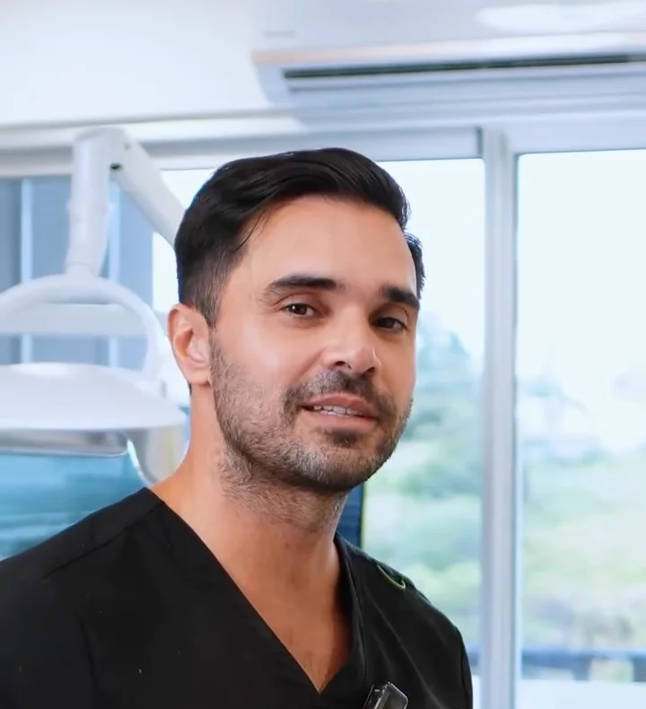
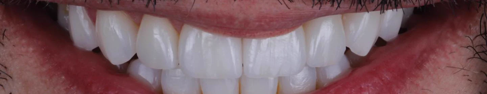
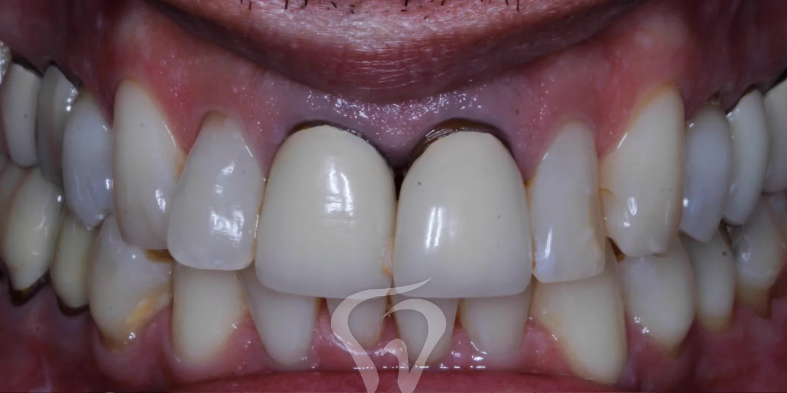
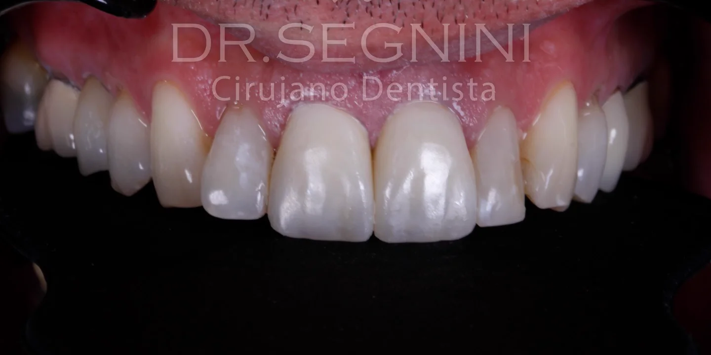
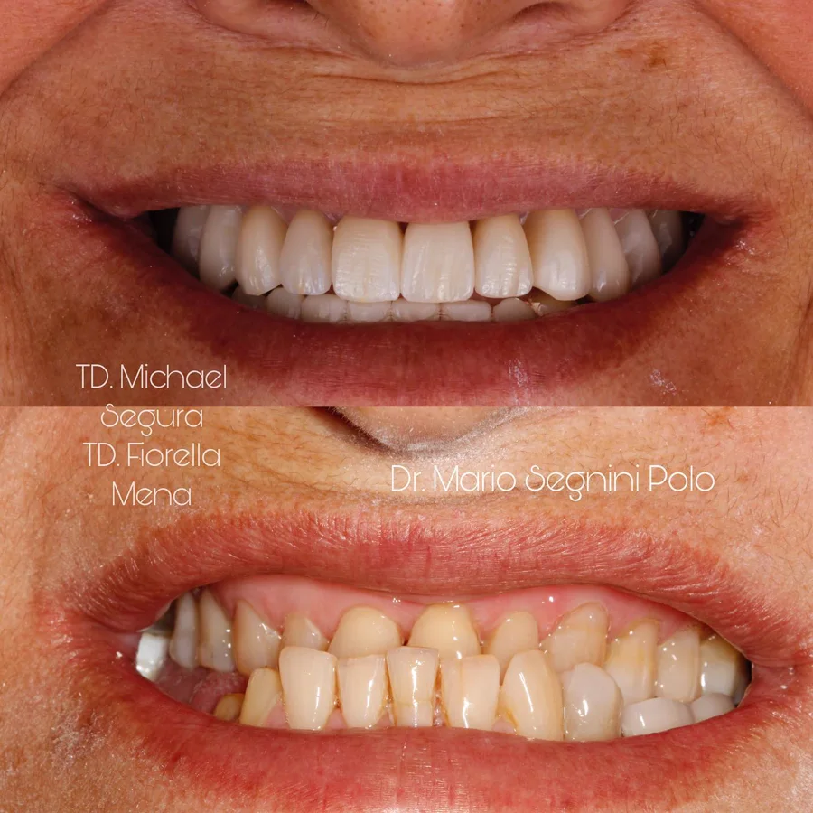
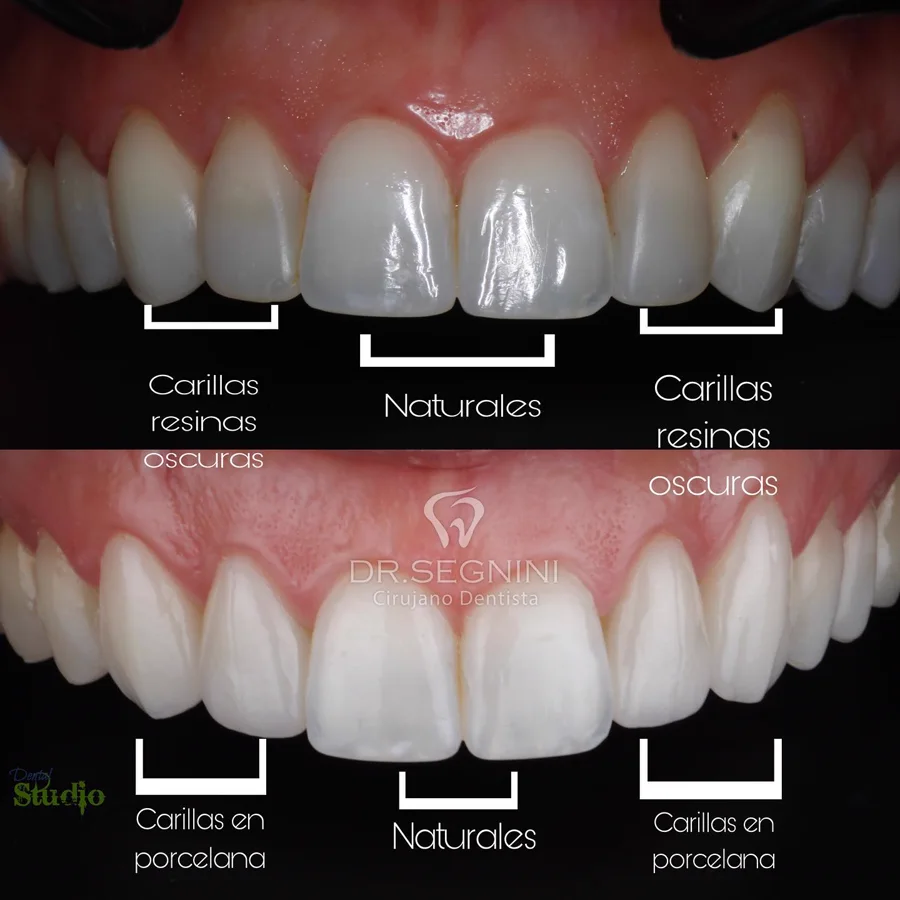
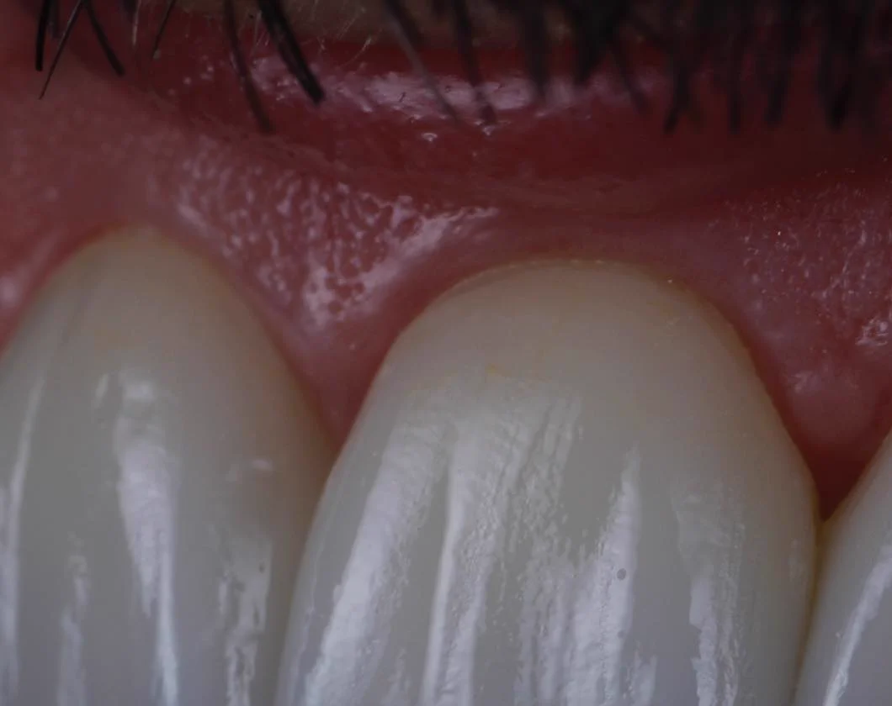
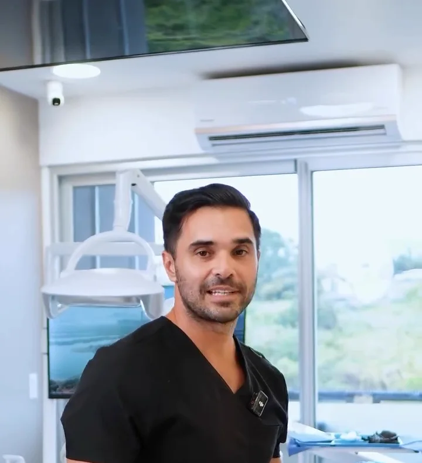

Que se note tu sonrisa, no el trabajo.

Carillas de porcelana, diseño de sonrisa y roncoplastía láser en Momentum Escazú.
Agendá tu valoración- Fellowship en implantes, Universidad de Miami
- Momentum Escazú, cuarto piso, local 39
Tiene activado "Reducir movimiento": la portada se muestra quieta.
92,6 % de Costa Rica usa internet 96 % de los adultos con celular usa WhatsApp 43 % elige dentista por sus reseñas en Google 4.573 personas lo siguen en Instagram
Instagram lo muestra. Una web hace que lo encuentren.
-
92,6%
de la población de Costa Rica usa internet. Las redes sociales llegan al 74,5 %. Una web le habla también a quien no lo sigue.
DataReportal, «Digital 2025: Costa Rica», enero de 2025.
-
43%
de quienes buscan dentista en Google elige al que tiene mejores reseñas. Su web junta sus casos y lo que dicen sus pacientes.
IronMonk, encuesta a 1.500 adultos en EE. UU., agosto de 2019.
-
96%
de los adultos con celular en Costa Rica usa WhatsApp. Cada botón de su web abre una conversación con el mensaje listo.
CICOM-UCR, «Nuestras apps de cada día 2025».
Lo natural se demuestra.
Así se verían sus casos en la web: grandes, nítidos y comparables. Arrastre la línea.


Caso real del Dr. Segnini, publicado en su Instagram en mayo de 2026.




Lo que hace.
Carillas de porcelana
Color, forma y brillo que no se notan postizos.
ConsultáDiseño de sonrisa
Planificado caso por caso para lograr armonía y función.
ConsultáRoncoplastía láser
Menos ronquidos, sin cirugía.
ConsultáLáser terapéutico
Alivio para bruxismo, aftas y herpes.
ConsultáBlanqueamiento
Con indicaciones claras para que el resultado dure.
ConsultáRehabilitación sobre implantes
Zirconio y porcelana para volver a comer y sonreír con seguridad.
Consultá
¿Roncás? Hay solución sin cirugía.
El láser trabaja de forma controlada sobre los tejidos del paladar, les da firmeza y reduce su vibración durante el sueño. Es mínimamente invasivo y pensado para que vos y quien duerme a tu lado descansen mejor.
Agendá tu valoración
Dr. Mario Segnini Polo
«Nos caracterizamos por resultados naturales muy estéticos, sin notar la existencia de un trabajo.»
- Fellowship en implantes con la Universidad de Miami y Odontópolis.
- Formación continua en estética, oclusión y cerámica.
- Trabaja en equipo con técnicos dentales y especialistas.
- Clínica nueva en Momentum Escazú, cuarto piso, local 39.
La dirección de arte.
Blanco y negro para todo lo demás; el color, solo en la sonrisa. La idea sale de su propio trabajo: lo que importa es el resultado.
Colores
- HuesoFondo principal
- BlancoTarjetas y luz
- TintaTextos, botón y bandas oscuras
- GrisTextos de apoyo
- DoradoSu marca: detalles y líneas
Letras
Que se note tu sonrisa
Albert Sans: delgada y gruesa en el mismo titular, como un susurro y una afirmación. Limpia y fácil de leer en el celular.
DR. SEGNINI
Cinzel: solo para la marca, igual que en su anuncio de Momentum.
Elementos propios
- La banda de sonrisaUna franja a color que cruza una foto en blanco y negro.
- La línea doradaSepara y compara: es también la línea del antes y después.
- Delgada y gruesaCada título combina los dos pesos de la letra.
¿Así se siente su marca?
Si esta dirección lo representa, el siguiente paso es construir la web completa con sus casos, tratamientos, la clínica, la ubicación y WhatsApp en cada botón.
Conversemos por WhatsApp